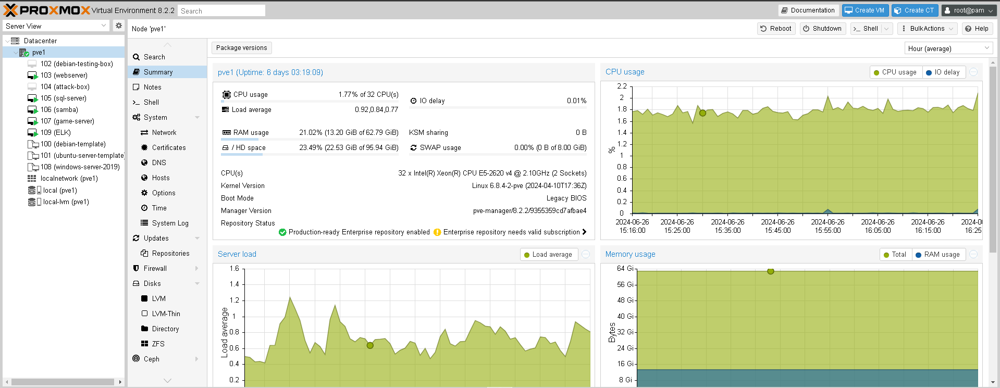
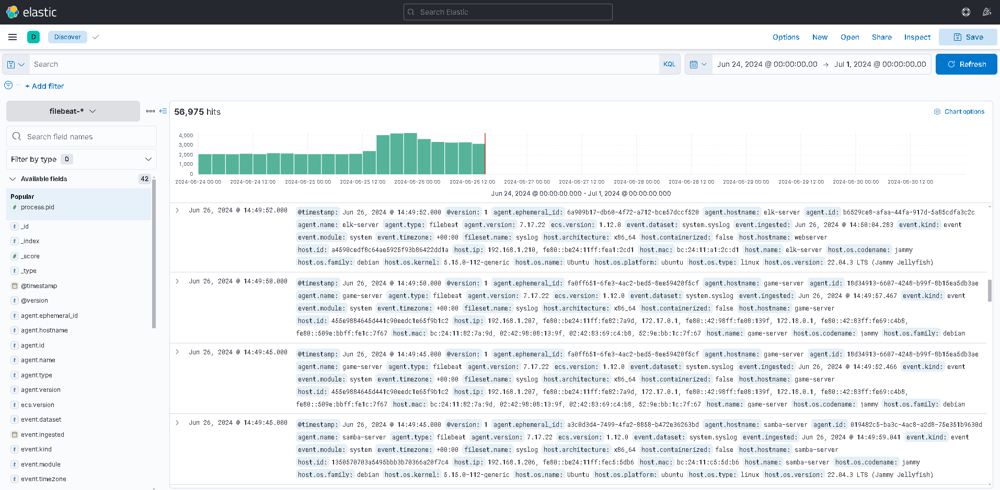
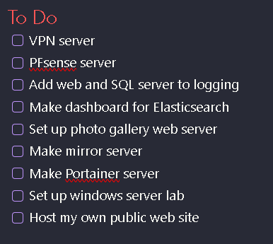
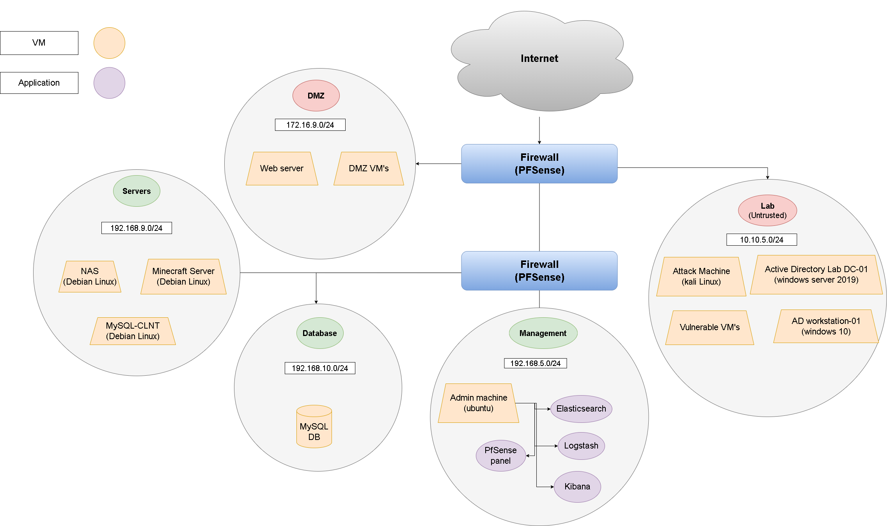

I bought a server 6 days ago, a Dell PowerEdge T430, and installed Proxmox on it. I've been configuring VM's, services and containers in all my free time since then. There is still so much I want to set up, so I decided I will work on one home lab project every day for the rest of the year. I also decided to start this home lab series with a goal to create one article a week about the configuration of something new in my home lab.
In the past six days I have already set up quite a bit, the first thing I did was install Proxmox as the KVM. After that I started setting up a few VM's including a web server, an SQL server, game server, samba share, a kali Linux machine and some templates such as a Ubuntu server, Debian 10 and windows server.
Most recently I configured an Elasticsearch server running the Elasticsearch stack (ELK) for logging and monitoring. Each VM's logs are feeding in to this server for processing using Logstash, and displayed on this dashboard. It's not pretty yet, but I'm going to continue improving upon it and ill be sure to write an article about setting it up in this series.
There is still many other VM's, services, containers, projects, and improvements I want to make. I have a to do list that grows much faster than shrinks, so I think I can keep this project/challenge going for a while.
The two biggest projects coming up will be setting up the PFsense server and configuring the firewall and routing for the whole network. The other project (which I'm dreading) will be DNS, DNS and I have never got along very well, but maybe this time it will be different.
Here is a rough network diagram overview of what I'm planning on building. I know already that its not going to look exactly like this, and I haven't decided what I'm going to host as a VM or a container, but this is a decent big picture view of how I would like to orchestrate this network.
This has just been an overview and introduction to the project, the next articles will be a lot more focused around a specific aspect or component of the network. I think i will start off simple next week with showing the first server I configured, which was the web server, running a basic internal apache site.
Stay tuned...